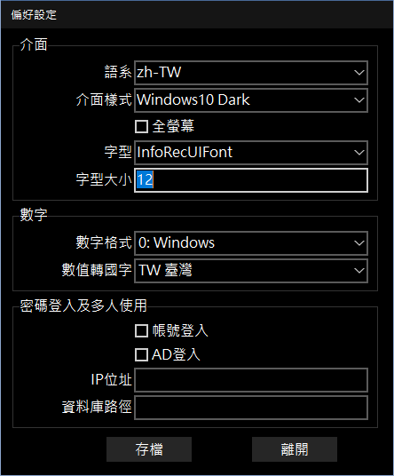

偏好設定
於「工具 > 偏好設定」調整介面、數字、密碼登入及多人使用，按「存檔」後重新啟動生效。
介面
語系：已內建 24 種語系，可依需求修改及擴充。
介面樣式：選擇後立即預覽，未存檔則還原。
字型、字型大小：建議 12～14。
全螢幕：啟動時以全螢幕顯示。
建議環境：解析度 1920×1080，Windows 縮放 100%～125%。
數字
數字格式：千分位與小數點符號，預設依 Windows 地區設定。
數值轉國字：支票、單據金額轉為大寫國字，預設依 Windows 地區設定。
密碼登入及多人使用
帳號登入：開啟後須以帳號密碼登入，預設帳號 ADMIN、密碼 admin。
AD 登入：搭配 AD 網域使用，可與帳號登入混搭使用。
多人使用：設定遠端伺服器 IP 位址、資料庫路徑，InfoRec 即以網路版方式運作。
